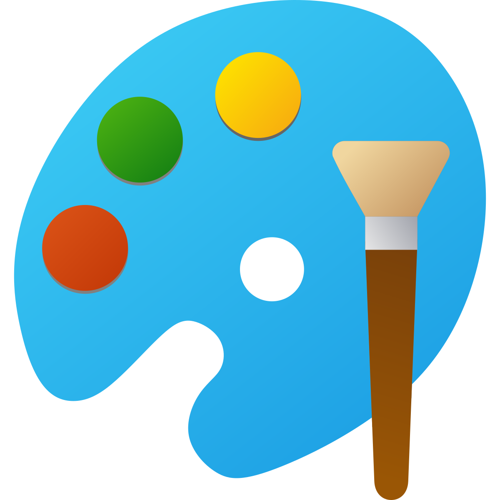
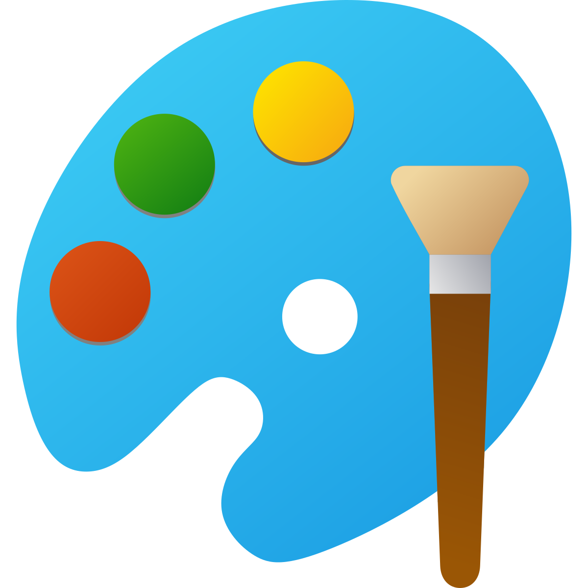

Paint
Paint — это простой графический редактор, встроенный в Windows. Несмотря на базовые функции, он подходит для создания несложных иллюстраций, которые затем можно распечатать на струйном принтере.
Paint — это простой графический редактор, встроенный в Windows. Несмотря на базовые функции, он подходит для создания несложных иллюстраций, которые затем можно распечатать на струйном принтере.
